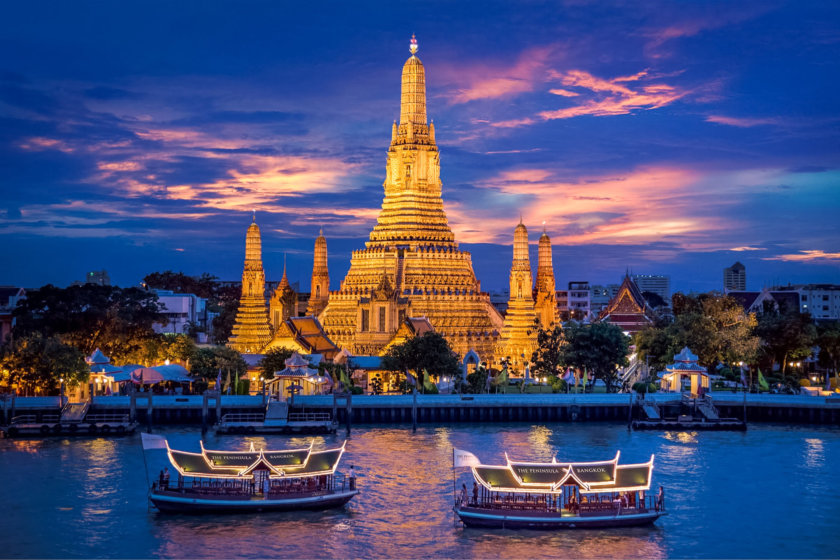

TODO LO QUE NO PODES PERDERTE DE TAILANDIA
Tailandia ofrece una amplia gama de tours y actividades para disfrutar durante tu visita. Aquí tienes algunas opciones que no podes perderte
Los Templos de Bangkok
Explora los impresionantes templos de Bangkok, como el Templo del Buda Esmeralda (Wat Phra Kaew) y el Templo del Amanecer (Wat Arun). Un recorrido por estos sitios sagrados ofrece una visión de la cultura y la historia tailandesas.
Templo del Buda Esmeralda (Wat Phra Kaew)
Templo del Amanecer (Wat Arun)
Mercados Flotantes
Paseo en barco por los mercados flotantes: Dirígete a los mercados flotantes, como el de Damnoen Saduak o el de Amphawa, donde podrás navegar en un bote a través de los canales y comprar productos frescos, artesanías y comida local.
Trekking
Trekking en el norte de Tailandia: Embárcate en una aventura de senderismo por las montañas del norte de Tailandia, en lugares como Chiang Mai o Chiang Rai. Podrás explorar paisajes impresionantes, visitar tribus locales y aprender sobre su cultura.

Parque Natural Doi Inthanon
Islas y playas de Tailandia
Explora las hermosas islas tailandesas, como Phi Phi, Phuket, Krabi o Koh Samui. Disfruta de aguas cristalinas, playas de arena blanca, actividades acuáticas y relajación en el paraíso tropical.
Phiphi Island

Koh Samui

Krabi

Phuket
Santuario de Elefantes
Visita un santuario ético de elefantes en el norte de Tailandia, donde puedes interactuar con estos majestuosos animales de una manera responsable y aprender sobre su conservación.
Ruinas de Ayutthaya
Realiza un recorrido por las antiguas ruinas de Ayutthaya, la antigua capital de Tailandia. Explora los templos y estatuas históricas, y sumérgete en la rica historia del país.